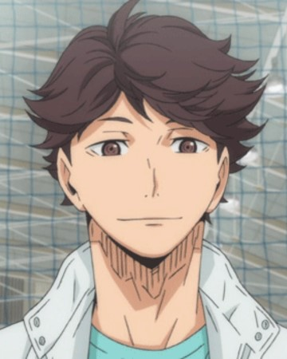
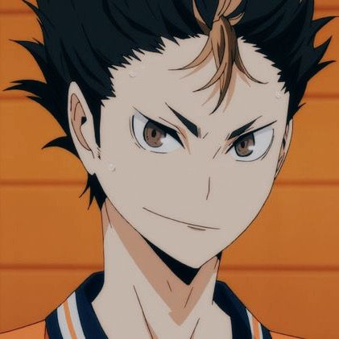

Hinata Soyo
Aspirando a ser jugador de voleibol, Hinata anhela ser como el «Pequeño gigante», un estudiante de Karasuno de baja altura que solía jugar voleibol. Aunque comenzó a jugar voleibol en secundaria, el número de miembros era pequeño y lo trataban como un club de fanáticos, y no podía practicar adecuadamente. El partido oficial de su último año de secundaria, que logró hacer la primera aparición con la misma cantidad de personas se convirtió en su último partido en esa escuela, donde jugó contra Kitagawa Daiichi, escuela a la que asistía Kageyama y fue derrotado.

Tobio Kageyama
Tobio Kageyama (影山飛雄, Kageyama Tobio) es un jugador profesional de la V-League y exalumno de la Preparatoria Karasuno. A su vez, actualmente es miembro del Schweiden Adlers en el que juega habitualmente como Armador.
Toru Oikawa
Tōru Oikawa 「及川徹 Oikawa Tōru?」 es un estudiante de 3er año de la Preparatoria Aoba Jōsai. Él es el capitán del equipo de voleibol y es ampliamente considerado como el mejor jugador del equipo, a pesar de no ser la estrella.
Yu Nishinoya
Yū Nishinoya 「西谷夕, Nishinoya Yuu?」 es un estudiante de segundo año de Karasuno. Es el líbero del equipo de voleibol y su número es el 4. Es apodado por sus compañeros como «La deidad guardiana de Karasuno».